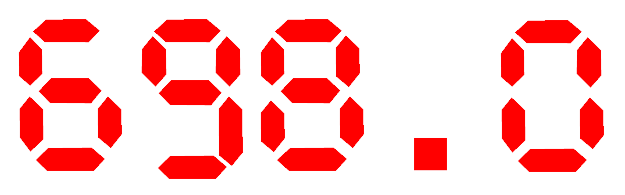
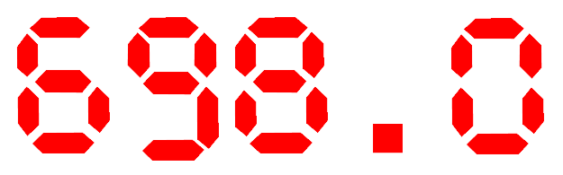
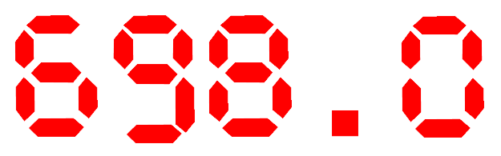
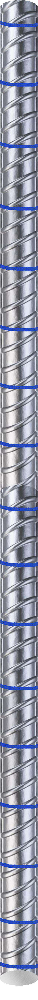
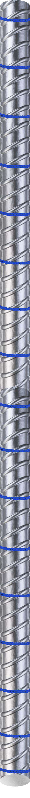
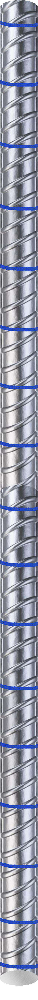
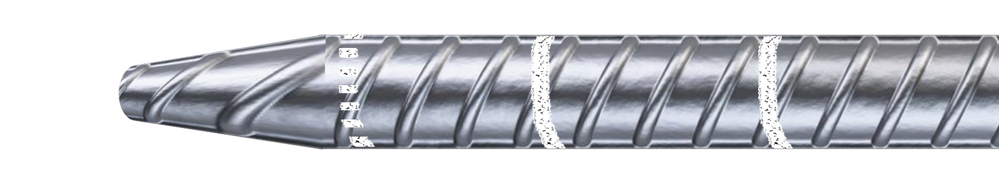
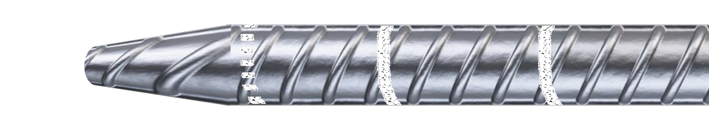
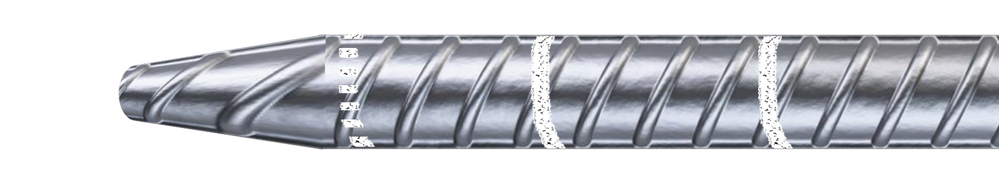

Tensile test on steel reinforcement
Objective:
To determine the yield stress/proof stress, maximum stress, ductility for steel rebar under tension.
Apparatus Materials:
Universal Testing Machine (UTM) with applicable tensile grips, Mechanical extensometer, Calipers,Mechanical dividers, Machinist scale, Gauge length punch and hammer

 Specimen 1
Specimen 2
Specimen 3
Specimen 1
Specimen 2
Specimen 3
 1 Meter
1 Meter
Specimen type:
Reber
STEP
1
a) Determine the cross-sectional area, So, and gauge length, Lo, of the specimen
b) Click on add button to bring plate in the lab.
c) Click on piller to arrange them in right position.
d) Click on plate to put it on the pillers.

 




| Length | 1000 mm |
| Weight | 875.4 g |
| Density | 7850 Kg/m3 |
| Area of cross section, So | 111.5 mm2 |
| Effective diameter, d | 11.92 mm |
| Gauge length | 59.66 mm |
| Chosen Gauge Length, Lo | 60 mm |
STEP
2
Mark a series of overlapping gauge lengths separated by 5 or 10 mm on the specimen.


| Sample | 1 |
| Length | 1 m |
| Weight | 875.4 |
STEP
3
Insert the specimen in the UTM such that the centers of the grips are in alignment with the axis of the specimen at the beginning and during the test. Attach the extensometer carefully.
60 mm
(Gauge Length) 

60 mm(Gauge Length)

STEP
4
Select a load range for the UTM that will accommodate the maximum anticipated load during the test.Apply load by prescribed rate. Within the elastic range the rate of stressing shall be between 6 MPa/secand 60 MPa/sec.Within the plastic range the straining rate shall not exceed 0.0025/s for determination of yieldstrength and 0.008/s for determination of tensile strength. Remove the extensometer close to ultimate stress.
Record simultaneously the readings of load from the UTM and elongation from the extensometer.

STEP
5
After failure, fit the broken halves together and measure the final ‘gauge’ length, Lf.
 
71.39 mm

71.39 mm

71.39 mm
Observations and calculations
| Type of Steel | Fe 500 |
| Shape and size of cross section | Deformed circular, 12 mm |
| Specimen no. | 1 | 2 | 3 | Average |
| Weight, w (g) | 875.4 | |||
| Length, L (mm) | 1000 | |||
| Effective cross section area, So = w/7.85L (mm2) | 111.5 | |||
| Effective diameter, d (mm) | 11.92 | |||
| Original Gauge length, Lo* = 5.65√So (mm) | 59.66 | |||
| Chosen Gauge Length, Lo | 60 | |||
| Yield stress (MPa) | 464.6 | |||
| Tensile strength (MPa) | 581.6 | |||
| TS/YS ratio | 1.25 | |||
| Gauge length after fracture, Lu (mm) | 73.29 | |||
| % Elongation after fracture, (Lu-Lo)/Lo×100 | 22.15 |
Observations and calculations
| Type of Steel | Fe 500 |
| Shape and size of cross section | Deformed circular, 12 mm |
| Specimen no. | 1 | 2 | 3 | Average |
| Weight, w (g) | 875.4 | 879 | ||
| Length, L (mm) | 1000 | 1000 | ||
| Effective cross section area, So = w/7.85L (mm2) | 111.5 | 112.0 | ||
| Effective diameter, d (mm) | 11.92 | 11.94 | ||
| Original Gauge length, Lo* = 5.65√So (mm) | 59.66 | 59.78 | ||
| Chosen Gauge Length, Lo | 60 | 60 | ||
| Yield stress (MPa) | 464.6 | 513.7 | ||
| Tensile strength (MPa) | 581.6 | 602.2 | ||
| TS/YS ratio | 1.25 | 1.17 | ||
| Gauge length after fracture, Lu (mm) | 73.29 | 71.71 | ||
| % Elongation after fracture, (Lu-Lo)/Lo×100 | 22.15 | 19.51 |
Observations and calculations
| Type of Steel | Fe 500 |
| Shape and size of cross section | Deformed circular, 12 mm |
| Specimen no. | 1 | 2 | 3 | Average |
| Weight, w (g) | 875.4 | 879 | 873 | 875.8 |
| Length, L (mm) | 1000 | 1000 | 1000 | |
| Effective cross section area, So = w/7.85L (mm2) | 111.5 | 112.0 | 111.18 | |
| Effective diameter, d (mm) | 11.92 | 11.94 | 11.89 | 11.92 |
| Original Gauge length, Lo* = 5.65√So (mm) | 59.66 | 59.78 | 59.57 | |
| Chosen Gauge Length, Lo | 60 | 60 | 60 | |
| Yield stress (MPa) | 464.6 | 513.7 | 486.1 | 488.1 |
| Tensile strength (MPa) | 581.6 | 602.2 | 600.4 | 594.7 |
| TS/YS ratio | 1.25 | 1.17 | 1.23 | 1.22 |
| Gauge length after fracture, Lu (mm) | 73.29 | 71.71 | 72.54 | |
| % Elongation after fracture, (Lu-Lo)/Lo×100 | 22.15 | 19.51 | 20.90 | 20.85 |
Observations and calculations
The provided sample is Fail.
| Type of Steel | Fe 500 |
| Shape and size of cross section | Deformed circular, 12 mm |
| Specimen no. | 1 | 2 | 3 | Average | Ok/Not ok |
| Weight, w (g) | 875.4 | 879 | 873 | 875.8 | Ok |
| Length, L (mm) | 1000 | 1000 | 1000 | ||
| Effective cross section area, So = w/7.85L (mm2) | 111.5 | 112.0 | 111.18 | ||
| Effective diameter, d (mm) | 11.92 | 11.94 | 11.89 | 11.92 | |
| Original Gauge length, Lo* = 5.65√So (mm) | 59.66 | 59.78 | 59.57 | ||
| Chosen Gauge Length, Lo | 60 | 60 | 60 | ||
| Yield stress (MPa) | 464.6 | 513.7 | 486.1 | 488.1 | Not Ok |
| Tensile strength (MPa) | 581.6 | 602.2 | 600.4 | 594.7 | |
| TS/YS ratio | 1.25 | 1.17 | 1.23 | 1.22 | Ok |
| Gauge length after fracture, Lu (mm) | 73.29 | 71.71 | 72.54 | ||
| % Elongation after fracture, (Lu-Lo)/Lo×100 | 22.15 | 19.51 | 20.90 | 20.85 | Ok |